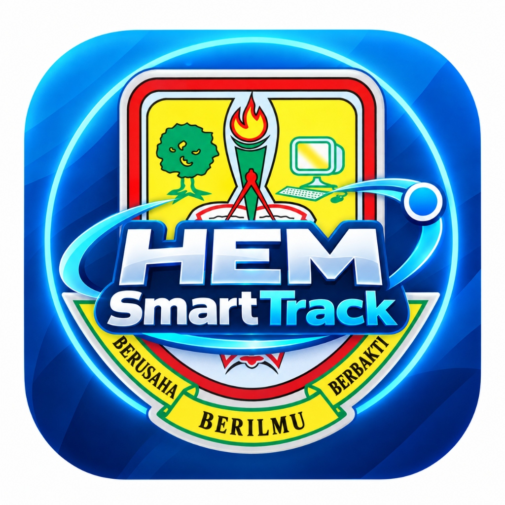

Pengenalan Berimpak Tinggi Sebelum Slaid Pembentangan Bermula
Teks Ucapan Pembangun: Mohammad Fikrey bin Abdul Gapar
Masa Pembentangan: 10 Minit (600 saat) (~1 minit bagi setiap slaid) • Soal Jawab Juri: 5 Minit.